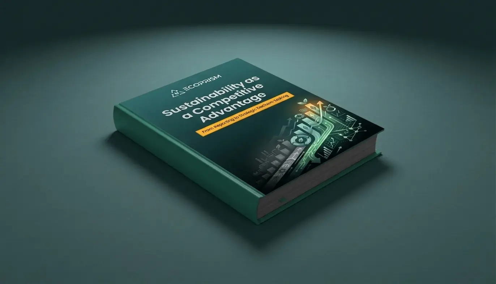

Sustainability as a
Competitive Advantage
A Practical Guide to Moving from ESG Reporting to Strategic Decision-Making

Get your free copy
Fill out the form below to receive the whitepaper in your inbox immediately.
Why ESG Fails to Deliver Competitive Advantage
Most organizations have ESG programs. Few have turned them into a source of competitive advantage. This paper explains the difference.
ESG is now shaped by regulation, capital markets, and consumer expectations - the pressure is only increasing.
Most sustainability efforts stay fragmented and disconnected from the decisions that actually drive business performance.
A practical framework for embedding ESG into core strategy - with real examples from companies already doing it.
What This Whitepaper Covers
Turn sustainability into a strategic advantage.
Download the whitepaper to learn how to embed ESG into capital allocation, operations, and growth strategy.
About ecoPRISM
ecoPRISM revolutionizes sustainability management for enterprises by automating data collection, generating advanced insights, and facilitating scenario simulations for actionable strategies. With a SaaS-based approach, ecoPRISM empowers businesses to set and monitor ambitious targets while ensuring compliance with regulatory requirements, including the new CSRD regulation. As business leaders navigate their ESG transformation journey, ecoPRISM provides essential tools.